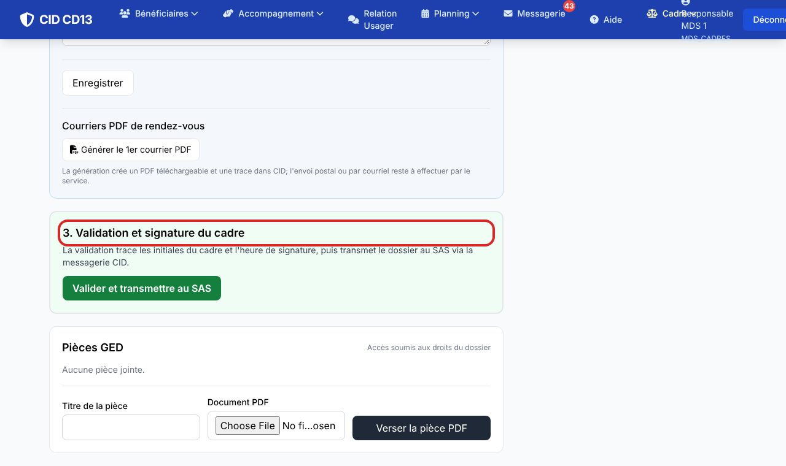
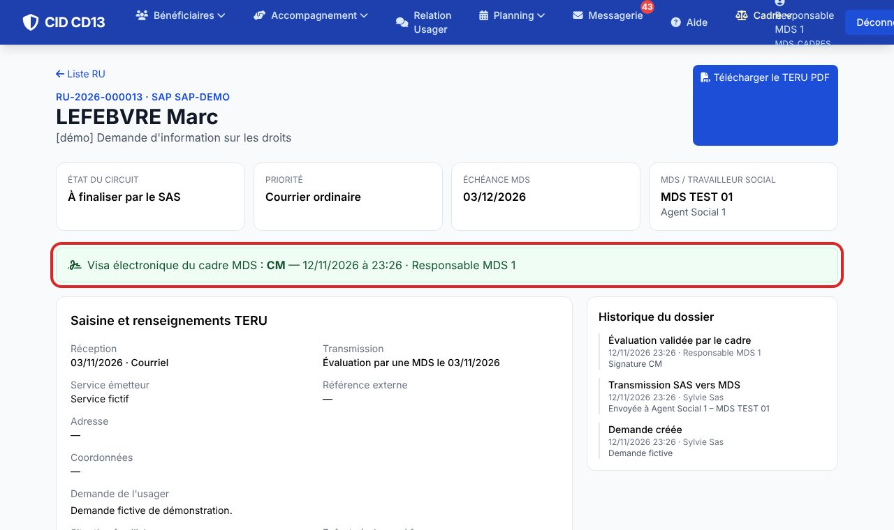
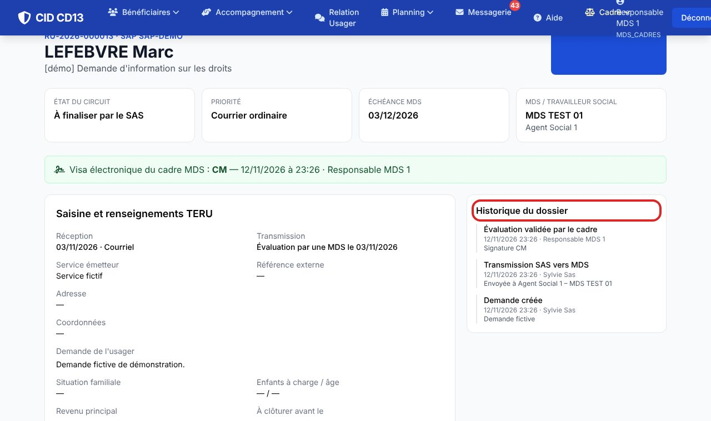

Avant de commencer
- Le cadre voit toutes les demandes de sa MDS, dès leur transmission.
1Vérifier l'évaluation

- Ouvrez la demande depuis la liste : son état est « À valider par le cadre MDS ».
- Relisez l'évaluation, les rendez-vous et les courriers. Vous pouvez corriger le texte tant que vous n'avez pas validé.
2Valider et transmettre au SAS

- Cliquez sur Valider et transmettre au SAS dans la section 3.
- CID enregistre vos initiales, la date et l'heure, puis envoie un message interne aux agents SAS habilités.
La validation est une signature de workflow (initiales, identité, heure), et non une signature électronique qualifiée.
3Vérifier la trace

- L'historique garde l'action « Évaluation validée par le cadre », avec les initiales et l'heure.
Bon à savoir
- Après le visa, l'évaluation est figée : le circuit ne prévoit pas de nouveau visa. Si une difficulté apparaît, signalez-la au SAS avant de valider.
Et ensuite ?
Cliquez sur une image pour l'agrandir. Le cadre rouge montre où cliquer ou quoi remplir. Toutes les données affichées sont fictives.